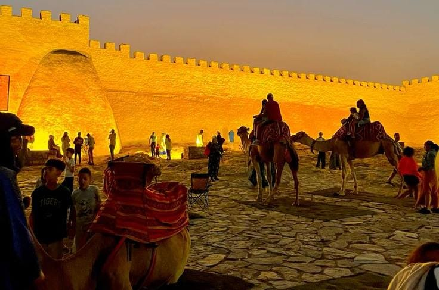
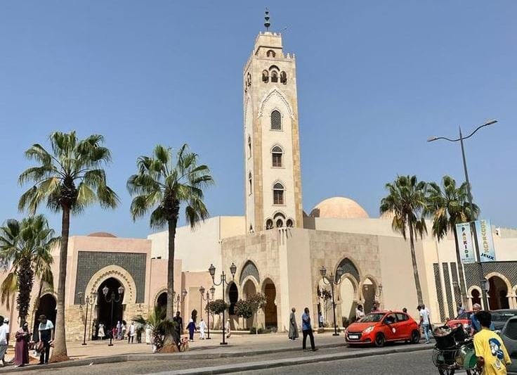
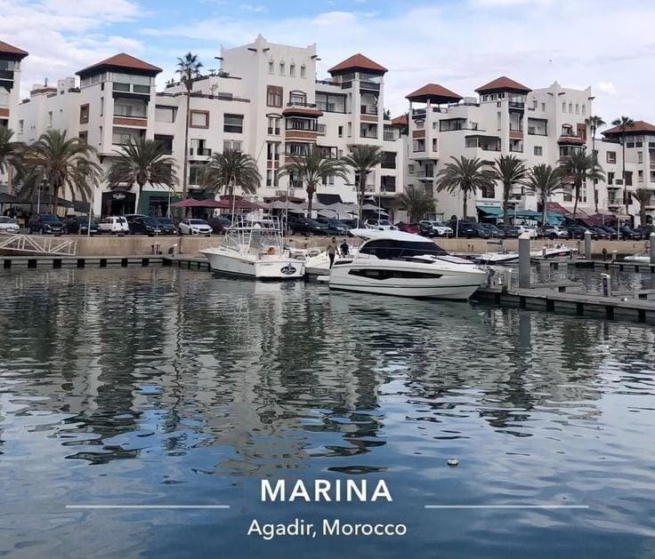

🏖️ La Plage d'Agadir
La plage d'Agadir est l'un des endroits les plus connus de la ville. Elle possède une longue plage et une belle promenade au bord de l'océan Atlantique.
🎯 Activités :
- Se promener sur la corniche
- Profiter de la vue sur l'océan
- Se détendre sur la plage
- Prendre des photos
- Profiter des cafés et restaurants

🏰 Agadir Oufella
Agadir Oufella est une ancienne Kasbah située sur les hauteurs de la ville. Elle offre une magnifique vue panoramique sur Agadir, la mer et le port.
🎯 Activités :
- 🚠 Monter dans le téléphérique et admirer la vue panoramique sur Agadir
- Visiter la Kasbah d'Agadir Oufella
- Prendre des photos avec une vue sur la mer et la ville
- Découvrir les vestiges de l'ancienne Kasbah
- Découvrir l'histoire et le patrimoine du lieu
- Profiter du coucher du soleil depuis les hauteurs

🛍️ Souk El Had
Le Souk El Had est le grand marché d'Agadir. On y trouve différents produits locaux, des épices, des vêtements, de l'artisanat et des souvenirs.
🎯 Activités :
- Se promener dans les différents espaces du souk
- Découvrir l'artisanat marocain
- Acheter des souvenirs
- Découvrir les épices et les produits locaux
- Observer l'ambiance du marché

⛵ La Marina d'Agadir
La Marina d'Agadir est une zone moderne située près de la mer. Elle possède des cafés, des restaurants, des boutiques et un espace agréable pour se promener.
🎯 Activités :
- Se promener près du port
- Admirer les bateaux
- Prendre des photos
- Profiter des cafés et restaurants
- Faire du shopping dans les boutiques